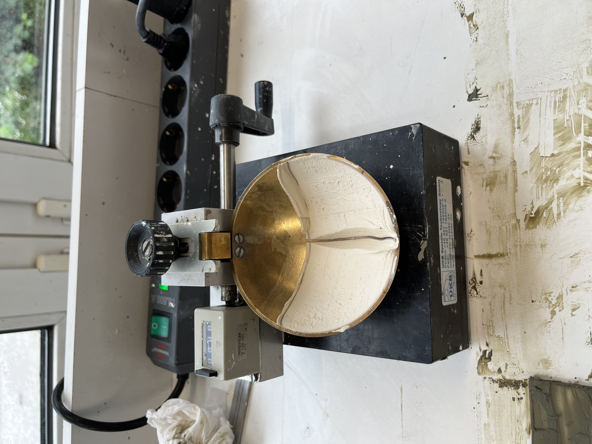
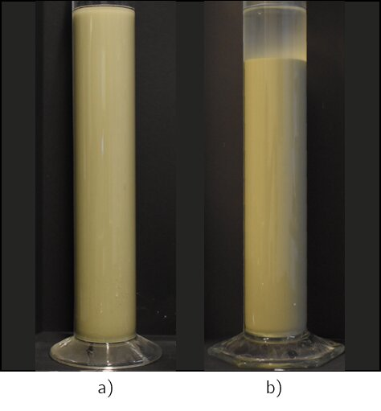
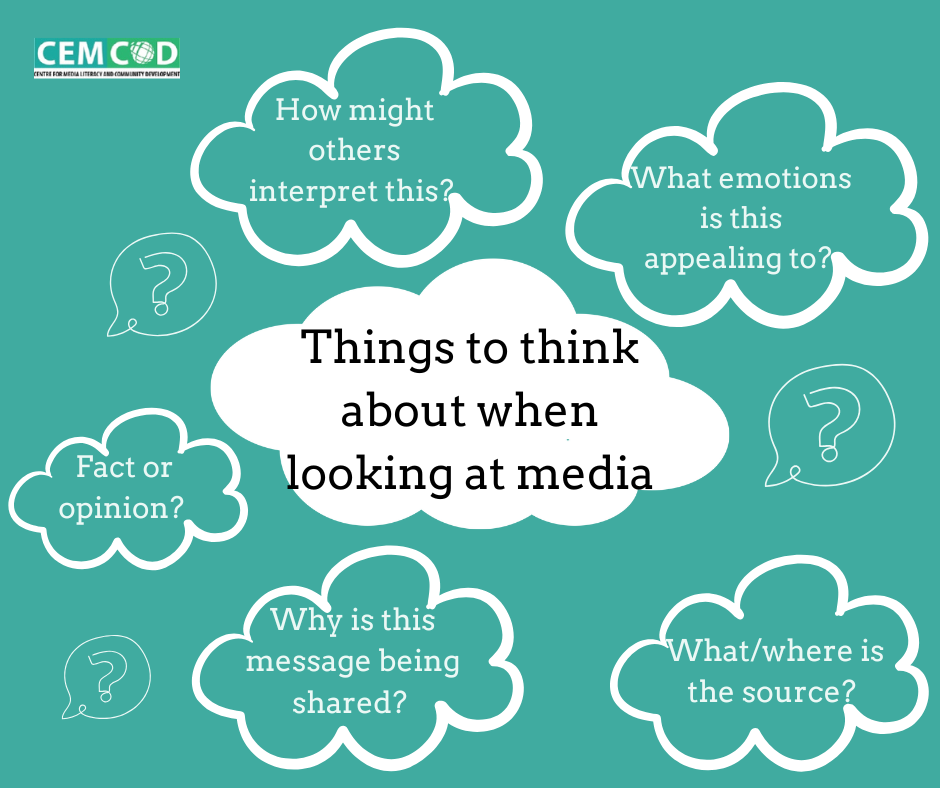
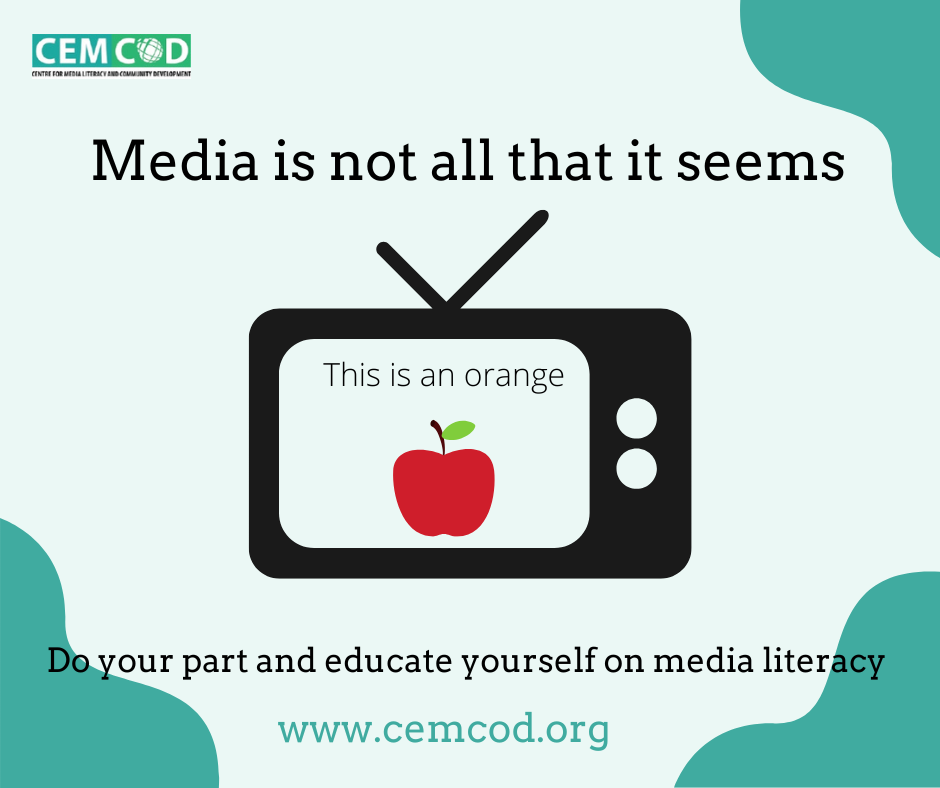
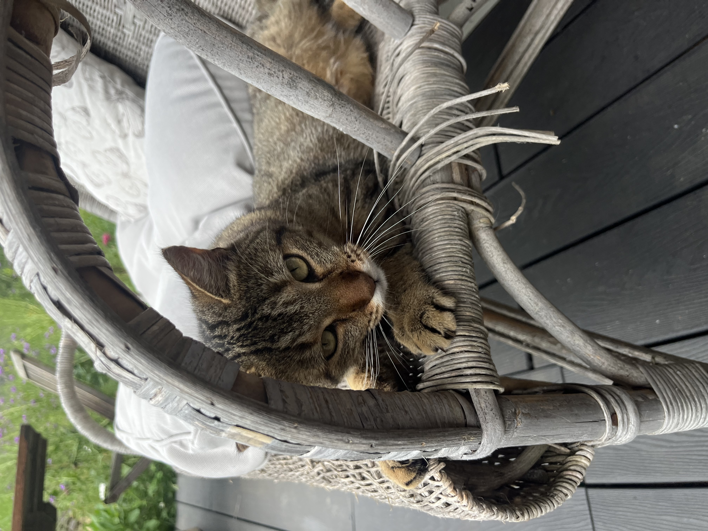
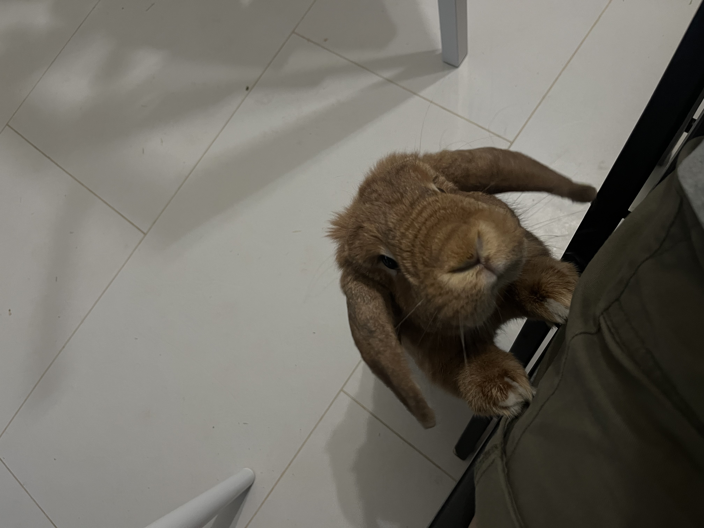
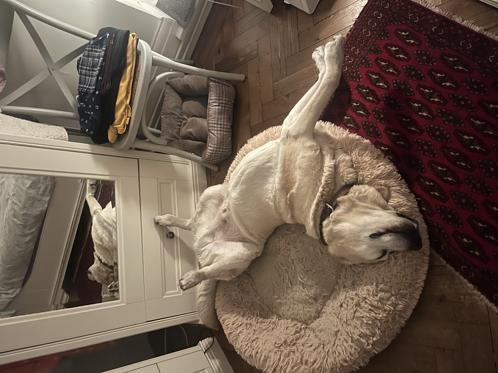
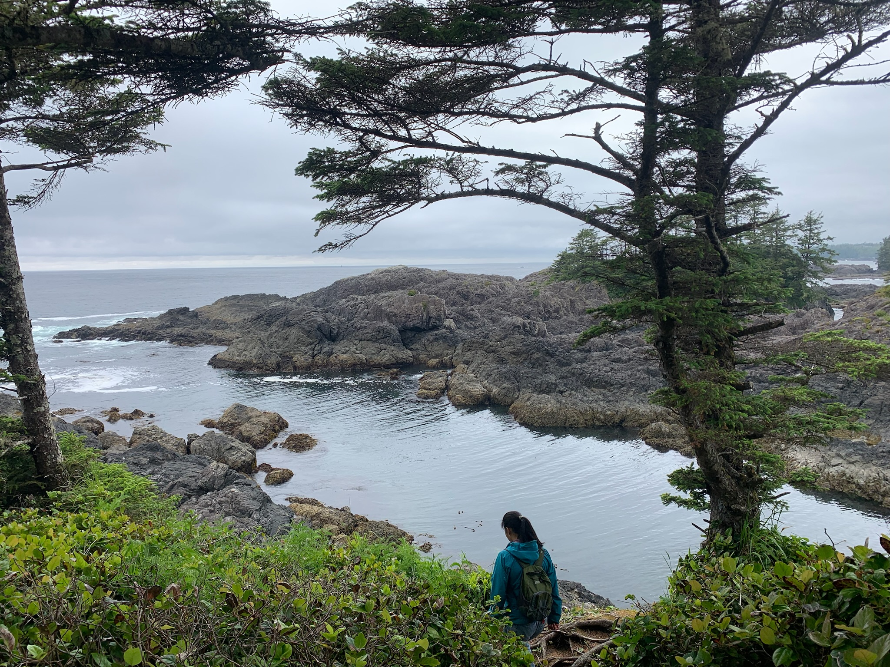

I am a 2025 graduate of the undergraduate Chemical Engineering program at the University of Waterloo. My previous roles have given me valuable insight into the research world, process and manufacturing engineering, quality assurance, and developing and implementing sustainable policies and regulations. Throughout my degree, I gained international experience completing an 8-month international co-op in Hamburg, Germany, and a 6-month international exchange semester at Swansea University in Wales.
My primary area of interest is creating a more sustainable future. I am specifically interested in bioplastics and sustainable product development, and the renewable energy sector. I know I want to contribute to meaningful, inclusive, and impactful work in the STEM fields that focus on the environment and bettering society.
Please see my resume for more information about my skills and experience, as well as my contact information. I would love to hear from you!
ABOUT ME
Reykjavik, Iceland 2023
My hometown is Kingston, but I studied Chemical Engineering at the University of Waterloo, and through international opportunities, I developed a love for travel. I was fortunate enough to go to Germany for 8 months for a co-op and then Wales for 6 months for an exchange semester, where afterwards, I did some travelling in Europe through TrustedHouseSitters. Immediately after finishing exams in my final semester, I went to Argentina for a month to volunteer on farms as a WWOOFer. These experiences have taught me a lot about myself, and they have given me an even greater appreciation for other cultures and people.
Bruce Peninsula National Park, Canada 2024
I've grown up playing competitive sports my entire life and staying physically active has always been important to me. I have found new enjoyment through climbing and long distance running, while of course still enjoying the sports I grew up with, speed skating and soccer. I have tried surfing and wind surfing a few times and I would love to do more. Hiking and camping have also become favourite outdoor activities. Really, anything I can do outdoors, I enjoy. In quieter moments, I enjoy knitting, reading, listening to podcasts, baking, doing jigsaw puzzles, and language learning. Lately, I've been focusing on Spanish and German.
EXPERIENCE
Co-op Positions
Placement Student @ Emnandi Bioplastics
X ASTUTE Centre of Excellence : Jan 2024 - June 2024
Skills: Experimental design, literature reviews, mechanical properties testing, LaTeX Conducted mechanical testing on recycled PLA (DSC, MFI, tensile) and assisted with experimental planning and test parameter selection. To support ongoing research in sustainable bioplastics, performed a literature review on PLA and recycled PLA properties.
Research Assistant @ Techniche Universität Hamburg-Harburg : May 2023 - Dec 2023
Skills: Python, data processing, academic research, geotechnical engineering lab tests, LiDAR scanning
Designed and executed geotechnical lab tests (e.g., Atterberg limits, triaxial, sedimentation), analyzing the results in Python, and preparing publication-ready data in addition to literature reviews. Additionally, worked with LiDAR scanning and used Python and MATLAB for point cloud visualization and analysis.
Project Engineering Student @ Zeton Inc. : Sept 2022 - Dec 2022
Skills: AutoCAD P&ID, packaging and shipping, purchase orders, VBA for Excel Working on the LanzaJet project, conducted instrument checks and tagging using P&IDs and 3D models, making necessary updates with AutoCAD. Streamlined label generation with Excel and VBA. Additionally, wrote purchase orders and assisted with packaging optimization for project shipping.
Engineering Student @ Environment and Climate Change Canada : Sept 2022 - Dec 2022
Skills: ISO Standards, QA, verification and validation, accreditation, SOP development
Supported the Quality Assurance Program for the Clean Fuels Regulations by developing SOPs, internal guidance documents, and literature reviews, gaining experience in verification and validation, certification, risk assessments, compliance, and accrediting body requirements, and developed strong knowledge of relevant ISO standards, including those for LCA, GHGs, and environmental management.
Research Assistent @ SNOLAB : May 2021 - August 2021
Skills: Clean labs, QA, remote troubleshooting, controls testing
Worked with the Tellurium Development and R&D teams to support the commissioning of two underground Te plants through controls testing, chemical testing in the plants and QA testing. As part of the SNO+ collaboration, assisted with remote detector monitoring, hourly reporting, and project work during shifts.
Volunteer and Leadership Roles
University of Waterloo Engineering Society
International Food Fair Director: Sept - Dec 2024
Hosted 400+ attendees providing a platform to share the food and culture of 8 student societies
Facilitated communication with university clubs for an international food fair event
Coordinated with the faculty, the undergraduate student society, and the engineering society about event logistics
EDI Commissioner: Jan 2022 - April 2023
Spearheaded initatives such as inclusivity training and cultural open mic nights, and continued on several initiatives such as policy reivew to improve the EDI of the society
Worked with the executive team and faculty to aid in education of the importance of EDI
Re-established the portfolio to full capacity since before COVID
Awarded the Engineering Society President's Award: awarded for valuable assistance to the activities of the society
Office Staff Member: Jan 2022 - April 2023
Assisted students with EngSoc services and logistics for events, such as room booking and equipment rental
Directed students to different engineering resources related to academics, mental health, athletics and other campus services
Exam Bank Director: Sept - Dec 2021
Manaaged and organized over 100+ exam bank submissions
Troubleshooted login issues with several students ensuring access to the bank
Facilitated raffles increasing submissions by 200%
Awarded the Engineering Society President's Award: awarded for valuable assistance to the activities of the society
University of Waterloo Faculty of Engineering
Engineering Faculty Embassador: Sept 2022 - April 2025
ASpoke to prospective students about engineering at Waterloo answering several questions through panels and webinars
Participated in marketing campaigns leading to 50k+ views and increasing social media engagement
Led 50+ department and faculty tours
Logistics and Travel Director for CFES' Conference on Diversity in Engineering @ UW 2023 : Jan 2023 - Nov 2023
Worked with logistics team to coordinate venues and catering for 200+ attendees
Negotiated travel discounts for delegates with airline, bus, and train companies providing 10 to 15% discounts
Kingston Striders Speed Skating Club
Trained Assistant Coach
Assisted with supervision and ensured safety of up to 30 skaters in the development group, youth and adults
Led weekly early morning practices of the advanced group with programming assistance from the head coach
Planned and carried out lesson plans for youth learning to skate and speed skate over 8 month periods in the skating season
Chauffeured and helped the young athletes at local competitions be on time and prepare for their races
Engineers Without Borders UW Chapter
Digital Marketing Specialist for collaboration with CEMCOD : Sept 2021 - Dec 2021
Design social media graphics and organize social media campaigns for NGO in Uganda successfully increasing engagement and awareness of media literacy by 20%
Collaborated with the UX/UI design team to improve website design
Workshop Member for Youth Engagement and Design Portfolio: Jan 2022 - Aug 2022
Assisted in planning and carrying out a workshop in collaboration with the Engineering Change Lab on engineering mindset and ethics for 20+ university students
Organized workshop about water consumption and scarcity for high school students, virtually delivering to 3 classes of approximately 25 students each
PROJECTS
Capstone Design Project: Mechanical and Materials Co-lead @ UW
Gabura Union, in Bangladesh, faces water salinity issues that have only been increasing due to rising sea levels, with groundwater conductivity levels between 2060 and 3190 µS/cm, far above the WHO water quality limit of 750 µS/cm. Current desalination methods are costly and inaccessible to rural areas. Our team of 4 investigated a sustainable and small-scale solar still desalination system with the objective to be accessible to residents. The final design was composed of a water basin with a glass cover, enhanced with stilts and mirrors to direct sunlight onto its metallic base, improving heat transfer efficiency and desalinated water throughput.
I was the mechanical and materials co-lead in the development of our modular design, as well as the administrative and organizational lead. Technical tasks included experimental testing, construction of the prototype, and the 3D modelling and assembly guide of the prototype using Autodesk Fusion 360. Administrative tasks included room booking and scheduling, meeting documentation, and overall file management.
My team and I competed in the Map the System campus finals at UW in 2025 where we placed in the top 5 of over 50 applicants.
Assembly Video Guide
Publication @ TUHH
Skills: Python, literature reviews, geotechnical lab tests
From May 2023 to December 2023, I was working a co-op at the Technical University of Hamburg-Harburg (TUHH), assisting with research on clay and the effects of salt on its geotechnical properties.
In this role, I designed and executed the geotechnical lab tests (Atterberg limits and sedimendation),se analyzed the results in Python, and preparing publication-ready data.
A conference paper titled "Influence of sodium chloride solutions on compressibility ofreconstituted illite", where I received co-author credits, was published June 2025 at the 5th International Symposium on Frontiers in Offshore Geotechnics. The article can be viewed on ResearchGate: here

Casagrande Test for Atterberg Limits

Sedimentation Columns - figure taken from article
Graphic Design @ EWB UW X CEMCOD
Skills: Python, literature reviews, geotechnical lab tests
From September 2021 to December 2021, I was a member of the Engineers Without Borders (EWB) UW chapter design portfolio where we collaborated with different start-ups and NGOs in Africa.
Working with an organization based in Uganda, the Center for Media Literacy and Community Development (CEMCOD), as a digital marketing specialis, I created social media graphics for a social media campaign with the objecttive to increase the engagement and awareness of media literacy. Our team created several different graphics increasing media engagement and awareness by 20%.


Example graphics designed
VOLUNTEER TRAVEL
TrustedHousesitters
After completing my exchange in Wales, I decided to take the summer off to travel, and as a student, budget travel was the goal. I discovered TrustedHousesitters, a website that connects house and pet sitters with homeowners around the world, offering accommodation in exchange for pet care. As someone who has pets back home, it felt like a perfect fit. The homeowners showed me around before they left, and I had the chance to experience the local culture and explore the area like a local.
Saint-Cergue, Switzerland

Milan, Italy

London, England

WWOOF
I knew that after finishing my final semester, I wanted to take a so-called "grad trip," but I wasn’t sure where to go or what to do. Many of my classmates had made plans with friends, but that wasn’t the case for me. Since I had started learning Spanish a year earlier and was eager to improve quickly, I decided to choose a Latin American country to immerse myself in the language. Some of my friends had taken part in a farming and gardening exchange through WWOOF in Portugal, which inspired me to look into it as another great budget-friendly travel option. After doing some research, I realized it would be a perfect fit.
I was fortunate to spend an entire month in Argentina working on two different farms, learning many new skills, immersing myself in Argentinian culture, improving my Spanish, and meeting amazing people.
La Cumbre, Códoba, Argentina
In La Cumbre, I was helping build a greenhouse using stainless steel rods and polycarbonate. The farm was fully run on solar power, and we used a solar cooker to cook many of our meals. I learned about building a greenhouse in terms of materials, positioning, and the space inside, as well as about using a solar cooker.
El Bolsón, Patagonia, Argentina
In El Bolsón, I was doing lots of carpentry work for a house being built in the town and assisting with preparing the large garden for winter. I learned how to use many different power tools for woodworking such as mitre saws sanders, about construction, and how to protect gardens over the winter.
ADVENTURES
I am grateful for the opportunities I have had to travel, experience new things, and meet new people. These are some of my favourite photos from my different adventures.
Speed Skating Competition in Clarington qualifying me for Nationals in Calgary March, 2018Climbing at Slate Quarry, Snowdon, Wales, March 2024
Completing 130km of Camino de Santiago Portuguese Way December 2023 West Highland Way, Scotland April 2024 La Tournette, Montmin, France July 2024

Ucluelet, Vancouver Island, British Columbia June 2025